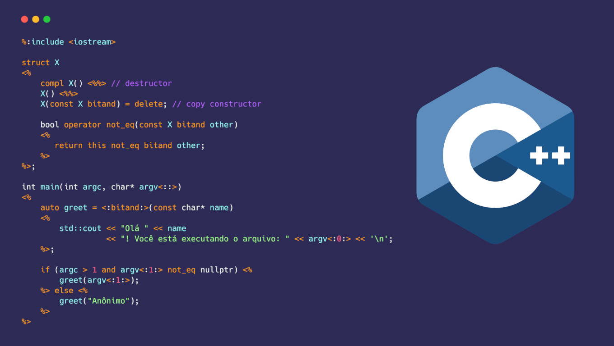
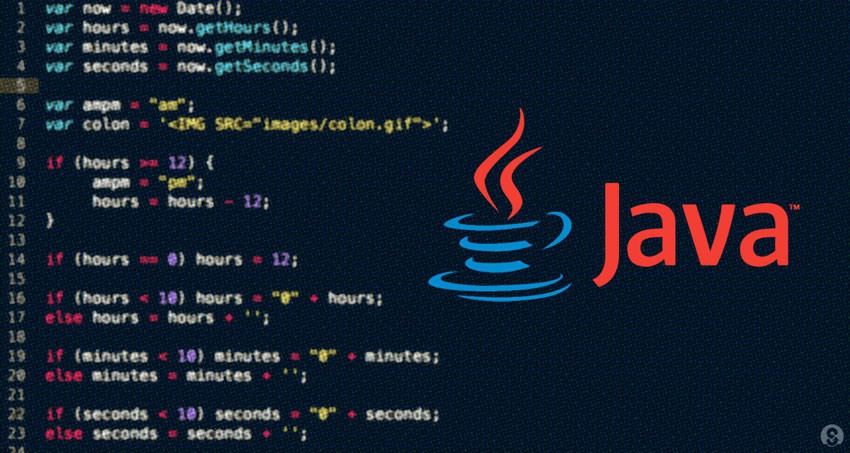
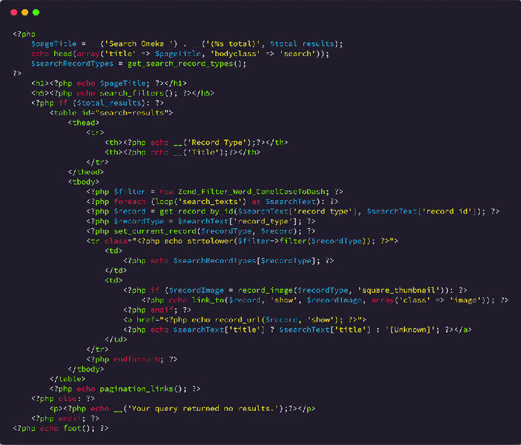

Linguagens de Programação
Linguagens de Programação
Tratando sobre linguagens programação
O que são linguagens de programação?
São series de códigos, onde seu objetivo é passar para a maquina linhas de comando, que por fim serão interpretados pelo próprio equipamento. Essas linhas de comando podem conter, desde um simples comando de escrita, como um complicado sistema de decisões.
A programação de computadores é a própria base da era digital em que vivemos hoje. Sempre que você curti um post nas redes sociais, enviar um e-mail ou colocar um alarme no seu telefone, uma linguagem de programação está trabalhando nos bastidores, ou seja, podemos dizer que as Linguagens de programação esta presente em tudo aquilo que consumimos.
Com essa breve introdução do conceito de linguagem de programação, você deve ter ficado com a seguinte duvida: Mas por onde começou tudo isto? A primeira linguagem de programação foi inventada há muito tempo, em 1843, por Ada Lovelace, ela inventou o primeiro algoritmo de máquina, para uma máquina de computação precoce, que ela escreveu em um pedaço de papel (porque não existiam computadores na época !).
As primeiras linguagens de programação conhecidas eram códigos de máquina complicados que eram introduzidos manualmente nas primeiras máquinas de computação. Como você vai descobrir, a programação de computadores desenvolveu-se rapidamente a partir de códigos de máquinas para códigos totalmente automatizados e legíveis por humanos. As linguagens de programação percorreram um longo caminho desde então, sempre tentando se reinventar de acordo com o seu período. Enfim, com tudo isso em mente, lhe apresentaremos agora uma breve "linha do tempo", com relação ao desenvolvimento das linguagens de programação.
Evolução das Linguagens de Programação:
-
O algoritmo da máquina de Ada Lovelace (1843):
É considerado o primeiro código de maquina, foi desenvolvido por Lovelace, serviu de base para muitas linguagens de programação, que vieram em seguida a essa.
“A imaginação é a faculdade da descoberta, predominantemente. É ela que penetra nos mundos invisíveis que nos rodeiam, nos mundos da ciência” ~ Ada Lovelace.
-
Plankalkül (1942-46):
O Plankalkül é uma linguagem de programação criada pelo cientista alemão Konrad Zuse, entre os anos de 1942-1946, no desenvolvimento dos primeiros computadores. A linguagem é considerada de alto nível, mas só foi publicada amplamente em 1972, e o compilador em 1998.
-
Assembly ou linguagem de montagem (1949):
É uma notação legível por humanos para o código de máquina que uma arquitetura de computador específica usa, utilizada para programar códigos entendidos por dispositivos computacionais, como microprocessadores e microcontroladores. O código de máquina torna-se legível pela substituição dos valores em bruto por símbolos chamados mnemónicos.
-
Autocódigo (1952):
Autocode foi um termo geral usado para uma família de linguagens de programação. Primeiro desenvolvido por Alick Glennie para o computador Mark 1 da Universidade de Manchester, Autocode foi o primeira linguagem compilada a ser implementada significando que ele pode ser traduzido diretamente em código de máquina usando um programa chamado compilador. O Autocódigo foi usado nas máquinas de computação precoce Ferranti Pegasus e Sirius, além do Mark 1.
-
FORTRAN (1952):
Foi criado por John Backus e é considerada a linguagem de programação mais antiga em uso hoje em dia. A linguagem de programação foi criada para computações científicas, matemáticas e estatísticas de alto nível. FORTRAN ainda hoje é usada em alguns dos supercomputadores mais avançados do mundo, também foi a primeira linguagem imperativa e seu primeiro compilador foi desenvolvido para o IBM 704 em 1954-57. Em 1962, o Fortran foi muito utilizado por cientistas na escrita de programas numericamente intensivos.
Para mais informações acesse os seguintes sites:
-
ALGOL (1958):
O ALGOL é uma linguagem de programação de alto nível voltada principalmente para aplicações científicas. Seu nome provém das palavras "Algorithmic Language" (Linguagem Algorítmica). A linguagem algorítmica ou ALGOL foi criada por um comité conjunto de cientistas informáticos americanos e europeus. O ALGOL serviu como ponto de partida para o desenvolvimento de algumas das mais importantes linguagens de programação, incluindo Pascal, C, C++ e Java. A linguagem continuou sendo desenvolvida e enriquecida com novas construções e novos comandos que aumentaram seu potencial, com isso surgiram novas versões para a linguagem, por exemplo, o Algol 68, o Algol W voltado para máquinas IBM e o Algol 6000/7000 da Burroughs. Em particular, a Burroughs projetou o hardware de seu computador B6700 com base na estrutura da linguagem Algol.
-
LISP (1958):
O processador de listas ou LISP é uma família de linguagens de programação concebida por John McCarthy em 1958 no Massachusetts Institue of Technology (MIT). Num célebre artigo, ele mostra que é possível usar exclusivamente funções matemáticas como estruturas de dados elementares. A linguagem Lisp foi projetada primariamente para à inteligência artificial, o LISP é uma das mais antigas linguagens de programação ainda hoje em uso e pode ser usado no lugar do Ruby ou Python. Empresas como Acceleration, Boeing, e Genworks ainda estão usando LISP em suas pilhas de tecnologia.
Mais informações no seguinte site.
-
COBOL (1959):
Língua Comum Orientada para os Negócios, é a linguagem de programação por trás de muitos processadores de cartões de crédito, caixas eletrônicos, chamadas telefônicas e celulares, sinais hospitalares e sistemas de sinais de trânsito (só para citar alguns). O desenvolvimento da linguagem foi liderado pela Dra. Grace Murray Hopper e foi projetado para que pudesse rodar em todas as marcas e tipos de computadores. COBOL ainda está acostumado até hoje principalmente para bancos e sistemas de gamificação.
-
BASIC (1964):
O Código de Instrução Simbólica para Iniciantes ou BASIC foi desenvolvido por um grupo de alunos do Dartmouth College. A linguagem foi escrita para alunos que não tinham uma forte compreensão de matemática ou computadores. A linguagem foi desenvolvida pelos fundadores da Microsoft Bill Gates e Paul Allen e tornou-se o primeiro produto comercializável da empresa.
-
PASCAL (1970):

Batizado em homenagem ao matemático francês Blaise Pascal, Niklaus Wirth desenvolveu a linguagem de programação em sua homenagem. Ela foi desenvolvida como uma ferramenta de aprendizagem para programação de computadores, o que significava que era fácil de aprender. Foi favorecida pela Apple nos primeiros tempos da empresa, devido à sua facilidade de uso e potência.
-
Smalltalk (1972)::

Desenvolvido no Centro de Pesquisa Xerox Palo Alto por Alan Kay, Adele Goldberg e Dan Ingalls, Smalltalk permitiu que programadores de computador modificassem o código na mosca. Ele introduziu uma variedade de aspectos de linguagem de programação que são linguagens visíveis de hoje, como Python, Java e Ruby. Empresas como a Leafly, Logitech e CrowdStrike usam Smalltalk em suas pilhas de tecnologia.
-
C (1972):

Desenvolvido por Dennis Ritchie nos Laboratórios Bell Telephone para uso com o sistema operacional Unix. Foi chamado de C porque se baseava numa linguagem anterior chamada 'B'. Muitas das principais linguagens atuais são derivadas do C incluindo; C#, Java, JavaScript, Perl, PHP, e Python. Ele também tem sido usado por grandes empresas como Google, Facebook e Apple.
-
SQL (1972):
SQL foi inicialmente desenvolvido pelos investigadores da IBM Raymond Boyce e Donald Chamberlain. O SEQUEL (como era referido na altura), é utilizado para visualizar e alterar informações que são armazenadas em bases de dados. Atualmente a linguagem é uma sigla - SQL, que significa Structured Query Language (Linguagem Estruturada de Consulta). Há uma infinidade de empresas que utilizam SQL e algumas delas incluem Microsoft e Accenture. A linguagem SQL é utilizada de maneira relativamente parecida entre os principais bancos de dados relacionais do mercado: Oracle, MySQL, MariaDB, PostgreSQL, Microsoft SQL Server, entre muitos outros. Cada um tem suas características, sendo o MySQL e o PostgreSQL extremamente populares por possuírem versões gratuitas e de código aberto.
-
Ada (1980 - 81):

A Ada foi originalmente concebida por uma equipa liderada por Jean Ichbiah da CUU Honeywell Bull sob contrato com o Departamento de Defesa dos Estados Unidos. Com o nome da matemática de meados do século XIX, Ada Lovelace, Ada é uma linguagem de programação de alto nível estruturada, estaticamente tipada, imperativa, de amplo espectro e orientada a objetos. Ada foi estendida de outras linguagens de programação populares na época, como Pascal. Ada é utilizada para sistemas de gestão de tráfego aéreo em países como Austrália, Bélgica e Alemanha, bem como para uma série de outros projetos de transporte e espaço.
-
C++ (1983):
Bjarne Stroustrup modificou a linguagem C nos Bell Labs, C++ é uma extensão do C com melhorias como classes, funções virtuais e modelos. Ele foi listado no 10 principais linguagens de programação desde 1986 e recebeu o estatuto de Hall da Fama em 2003. O C++ é usado no MS Office, Adobe Photoshop, motores de jogos e outros softwares de alta performance.
-
Objectivo-C (1983):
Desenvolvido por Brad Cox e Tom Love, Objective-C é a principal linguagem de programação utilizada para escrever software para MacOS e iOS, os sistemas operacionais da Apple.
Mais informações sobre o Objetivo C:
-
Perl (1987):
Perl foi criado por Larry Wall e é uma linguagem de programação de alto nível e de propósito geral. Foi originalmente concebida como uma linguagem de script para edição de texto, mas hoje em dia é amplamente utilizada para muitos fins, tais como CGI, aplicações de base de dados, administração de sistemas, programação de rede e programação gráfica.
-
Haskell (1990):
Haskell é uma linguagem de programação de uso geral com o nome do lógico e matemático americano Haskell Brooks Curry. É uma linguagem de programação puramente funcional, o que significa que é principalmente matemática. É usada em múltiplas indústrias, particularmente naquelas que lidam com cálculos complicados, registros e números. Como muitas outras linguagens de programação desta época, não é muito comum ver o Haskell em uso para aplicações bem conhecidas. Dito isto, a linguagem de programação tem sido usada para escrever uma série de jogos, um dos quais é Nikki e os Robôs.
-
Python (1991):
Python é uma linguagem de programação de alto nível, interpretada de script, imperativa, orientada a objetos, funcional, de tipagem dinâmica e forte. Foi lançada por Guido van Rossum em 1991. Atualmente, possui um modelo de desenvolvimento comunitário, aberto e gerenciado pela organização sem fins lucrativos, a Python Software Foundation. Apesar de várias partes da linguagem possuírem padrões e especificações formais, a linguagem, como um todo, não é formalmente especificada. O padrão de facto é a implementação CPython. Ultimamente o python vem tomando seu lugar no podium linguagens mais utilizadas, por ser uma bem versátil e possibilitar a automação de certo processos, de certa forma esta se tornando necessário estudar um pouco sobre o python pois este é uma das linguagens mais requisitadas atualmente no mercado de trabalho (claro, para aquele que desejam ingressar nessa carreira de programador/desenvolvedor web, ou para aqueles que querem ter uma "mãozinha" em tarefas recorrentes do dia a dia), as empresas estão cada vez mais procurando funcionários que possuem agilidade na resolução de tarefas, ai onde o python se encaixa, como ja citado anteriormente, o python é uma linguagem que proporciona a automação de certos processos, o que se encaixa perfeitamente no que maioria das empresas querem, ja que alguns dos processos requeridos por algumas dessas empresas são bem repetitivos (por exemplo, mandar Emails para contribuidores, funcionários, etc), com isso, de certa forma se faz necessário a aprendizagem (nem que seja do básico) de python.
-
Visual Básico (1991):
Desenvolvido pela Microsoft, o Visual Basic permite que os programadores utilizem um estilo de arrastar e soltar, escolhendo e alterando trechos de código pré-selecionados através de uma interface gráfica de usuário (GUI). A linguagem não é muito usada hoje em dia, no entanto, a Microsoft tem usado porções do Visual Basic para várias de suas aplicações como Word, Excel e Access.
Um aperfeiçoamento do BASIC, a linguagem é dirigida por eventos (event driven), e possui também um ambiente de desenvolvimento integrado (IDE — Integrated Development Environment) totalmente gráfico, facilitando enormemente a construção da interface das aplicações (GUI — Graphical User Interface).
-
Ruby (1995):
Criado por Yukihiro Matsumoto, Ruby é uma linguagem de programação de alto nível interpretada. Uma linguagem de ensino que foi influenciada pelo Perl, Ada, Lisp e Smalltalk - entre outros. Os principais usos do Ruby são para o desenvolvimento de aplicações web e Ruby on Rails. Twitter, Hulu, Groupon, Nubank, Globo.com, são alguns exemplos bem conhecidos de empresas que usam Ruby.
-
Java (1995):
Java é uma linguagem de alto nível, de propósito geral, criada por James Gosling para um projeto de TV interativa. Tem funcionalidade multi-plataforma e está consistentemente no topo das linguagens de programação mais populares do mundo. Java pode ser encontrado em qualquer lugar, desde computadores a smartphones e parquímetros. Java também é um línguagem orientada a objetos, produzindo na década de 90, ainda hoje é uma línguagem muito conceituada no mercado de programação.
-
PHP (1995):
Anteriormente conhecida como 'Personal Home Page' que agora significa 'Hypertext Preprocessor', PHP foi desenvolvido por Rasmus Lerdorf. Os seus principais usos incluem a construção e manutenção de páginas web dinâmicas, assim como o desenvolvimento do lado do servidor. Algumas das maiores empresas de todo o mundo usam PHP incluindo Facebook, Wikipedia, Digg, WordPress, e Joomla, Spotify, Uber, entre outras.
Em vez de muitos comandos para mostrar HTML (como acontece com C ou Perl), as páginas PHP contém HTML em código mesclado que faz "alguma coisa”. O código PHP é delimitado pelas instruções de processamento (tags) de início e fim que permitem que você entre e saia do "modo PHP".
-
JavaScript (1995):

Foi criada por Brendan Eich, esta linguagem é usada principalmente para desenvolvimento web dinâmico, documentos PDF, navegadores web e widgets de desktop. Quase todos os principais sites usam JavaScript. Gmail, Adobe Photoshop, e Mozilla Firefox incluem alguns exemplos bem conhecidos.
-
C# (2000):

Desenvolvido na Microsoft com a esperança de combinar a capacidade computacional de C++ Com a simplicidade do Visual Basic, o C# é baseado no C++ e compartilha muitas semelhanças com o Java. A linguagem é utilizada em quase todos os produtos Microsoft e é vista principalmente no desenvolvimento de aplicações desktop.
Mais informações aqui: Wikipedia
-
Scala (2003):
Desenvolvido por Martin Odersky, Scala que combina programação funcional matemática e programação organizada orientada a objetos. A compatibilidade do Scala com Java torna-o útil para o desenvolvimento do Android. Linkedin, Twitter, Foursquare e Netflix são apenas alguns exemplos das muitas empresas que usam o Scala em suas pilhas de tecnologia.
Ela incorpora recursos de linguagens orientadas a objetos e funcionais. Também é plenamente interoperável com Java. Scala é a sucessora de Funnel, uma linguagem baseada em join calculus. Scala é software de código aberto. Requer JDK versão 1.4 ou superior. Scala é uma linguagem de programação relativamente nova. Mesmo assim, nos últimos anos, conquistou empresas gigantes como o Twitter e o Foursquare. Uma das primeiras diferenças entre Scala e uma linguagem como Java, é que Scala também suporta o paradigma funcional.
-
GO (2009):
Foi desenvolvido pela Google para resolver problemas que ocorrem devido a grandes sistemas de software. Devido à sua estrutura simples e moderna, Go ganhou popularidade entre algumas das maiores empresas de tecnologia do mundo, como Google, Uber, Twitch e Dropbox.
A sintaxe de Go é semelhante a C e suas declarações são feitas com base em Pascal limpo; uma variação é a declaração de tipos, a ausência de parênteses em volta das estruturas for e if. No geral, essa linguagem é bem completa e razoavelmente fácil de trabalhar.
-
Swift (2014):
Desenvolvido pela Apple em substituição ao C, C++ e Objective-C, o Swift foi desenvolvido com a intenção de ser mais fácil que as linguagens acima mencionadas e permitir menos espaço para erros. A versatilidade da Swift significa que ela pode ser usada para aplicações desktop, móveis e em nuvem. O aplicativo de linguagem líder 'Duolingo' lançou um novo aplicativo que foi escrito em Swift.
Linguagens de Programação mais utilizadas atualmente:
Dentre as mais utilizadas podemos citar as seguintes:
De acordo com os dados mostrados, o JavaScript é a linguagem que mais se destacou no ano de 2021, por ser uma linguagem bem agradável de se trabalhar, logo em seguida a ele vem o Python, uma das linguagens mais conceituadas no ramo de programação (e que se caracteriza por ser umas das linguagens mais propicias no desenvolvimento de Inteligencias Artificiais).
Com todo esse conteúdo apresentado até agora você deve esta se perguntando: Mas por qual linguagem de programação éu começo? Com isso, lhe recomendamos as seguintes Linguagens:
-
Pascal:
É a linguagem que recomendamos para pessoas que ainda não tem muito contato com a programação, em nossa opinião, essa é a linguagem perfeita para pessoas leigas no mundo da programação, é fácil de se aprender o seu sintaxe, além de ter uma escrita bem fácil de decorar, pode ser bem limitada, mas como ja reforcei esta linguagem é para pessoas que querem aprender um pouco de lógica de programação.
Link para o download do compilador PASCAL (Apenas Sistema Operacional Windows): Compilador Pascal.
E para a galera do Mobile, aqui vai um link para um compilador Pascal para celulares: Compilador Pascal para Mobile
-
HTML /CSS /JavaScript:
Podemos chamar esses três de "A trindade do desenvolvimento Web", são as linguagens mais utilizadas na area de desenvolvimento de sites. Essas linguagens são recomendadas para pessoas que ja tem um certo conhecimento de lógica de programação.
Editor que recomendamos para usar essas linguagens (Apenas para computadores): Editor VS code.
Editor para celular: Editor Acode.
-
JAVA:
É uma linguagem bem legal de se programar, nela ja deve se ter uma boa base de lógica de programação, pois seus códigos são bem mais difíceis do que os anteriores, JAVA ja é mais voltado para a criação de aplicativos e jogos, por ser uma linguagem multe plataforma.
Link para download de IDE JAVA: IDE java.
Para celular (lembrando que a maioria dessas IDEs para celular são muito limitadas, ou seja, você só vai conseguir executar códigos simples nelas): IDE java para Mobile.
-
Python:
Ja citamos muito sobre python neste artigo, por isso seremos bem mais breves aqui, como ja citado anterior mente o python é uma das linguagem mais requisitada no mercado de trabalho e por esse e outros motivos ele pode ser considerado a uma das melhores Linguagens para programar.
Link para download de um programa que possibilita a programação em Python (Para PC): link para o programa.
Infelizmente não consegui encontrar uma ferramenta realmente funcional, que proporcionasse o desenvolvimento de códigos Python para celular :(
Por Fim:
Bem... este é o fim deste artigo, espero que tenham gostado dele e que de alguma forma possamos ter contribuído para a sua pesquisa. Enfim, queria deixar uma breve frase aqui, "Você sempre vai cair, sempre vai perder, mas só depende de você se vai continuar ou deixar-se abater".